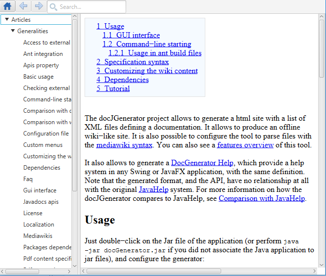
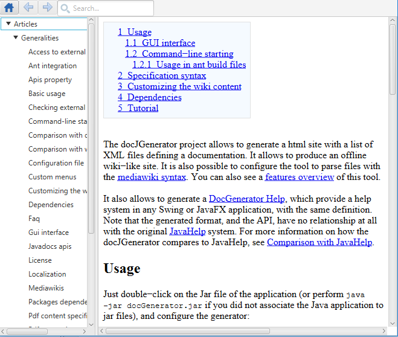

Help usage
The Help component allows to navigate between the wiki articles:
The Swing and JavaFX components have the same structure:
In Swing:

In JavaFX:

- The left panel shows a tree with all the article titles
- The right panel shows the content of the currently selected article
- The toolbar presents:
The Swing and JavaFX components have the same structure:
In Swing:
In JavaFX:

×

Categories: javahelp